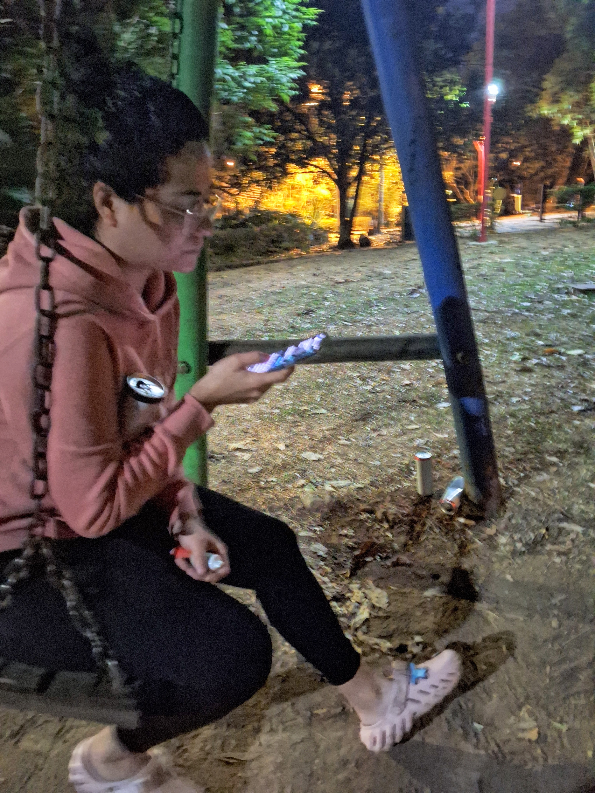
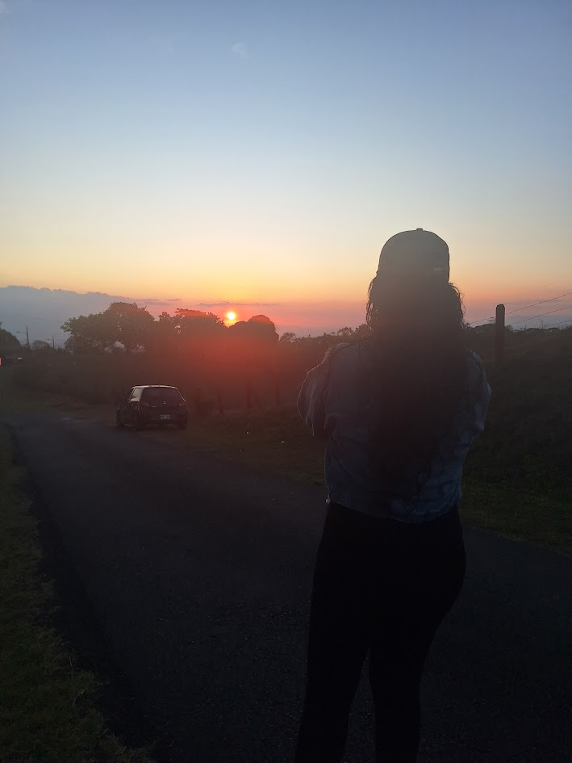
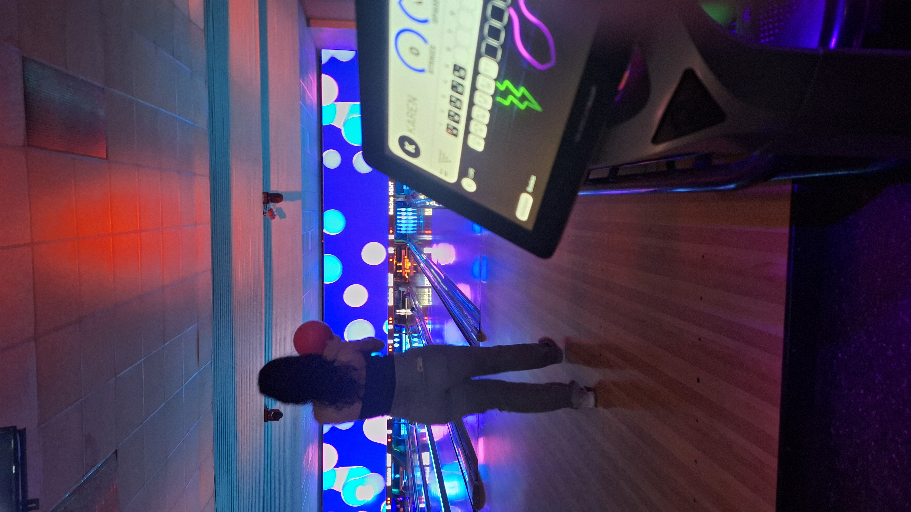

Dicen que la vida se mide en años...
Pero en realidad...
Se mide en los capítulos que nos transforman.
33
Cada vida es una historia.
Algunas personas llegan desde el primer capítulo.
Otras aparecen cuando la historia ya ha comenzado.
Hoy celebras 33 capítulos de una vida extraordinaria.

Los pequeños momentos
Los capítulos más importantes rara vez comienzan con grandes acontecimientos.
Empiezan con pequeños momentos como estos...
Una conversación. Una sonrisa. Un instante que termina convirtiéndose en un recuerdo.

Descubriendo el camino
Cada día trae nuevas preguntas.
Nuevos sueños.
Nuevas oportunidades.
Así continúa escribiéndose una gran historia.
La calma también escribe historias
También existen capítulos tranquilos.
Donde aparentemente no sucede nada.
Pero son precisamente esos momentos los que el corazón decide guardar para siempre.

Disfrutar el presente
Vivir también significa reír.
Intentarlo otra vez.
Disfrutar el camino.
Y celebrar cada momento compartido.
33
No conocí los primeros 30 capítulos de tu historia, pero me siento afortunado de haber llegado para vivir tres de ellos contigo. Hoy celebras 33 años, y yo celebro el privilegio de formar parte de una pequeña parte de ese hermoso recorrido. Feliz cumpleaños.
Las mejores historias nunca terminan con un 'fin'. Solo estan a la espera del siguiente capítulo.
Que este nuevo año esté lleno de paz, de Dios, sueños cumplidos, personas que sumen a tu vida y momentos que algún día también se convertirán en recuerdos.